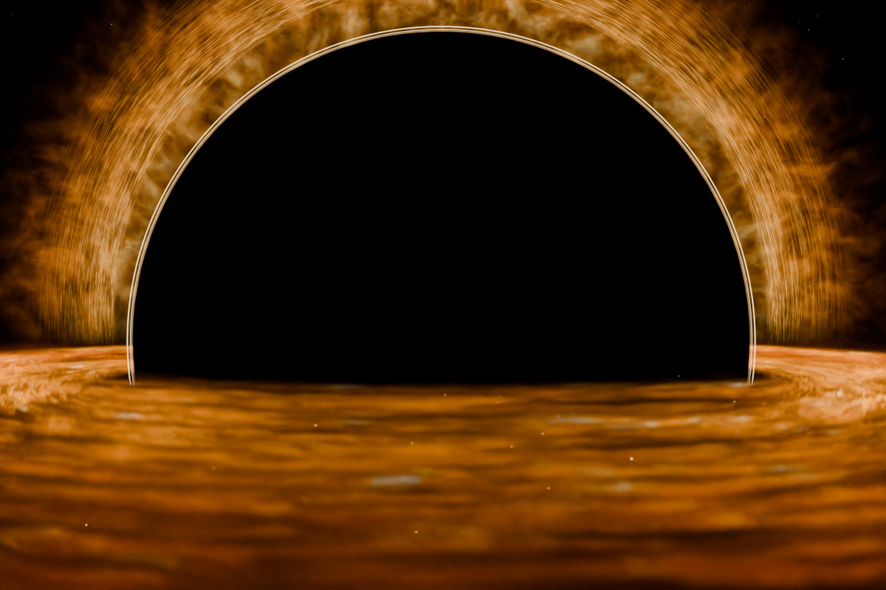

Static scene8 sources enabled
All sources are hidden
Show a source to include it in this view.
Universe placeholder3D scene and nodes are not loaded
The preview image couldn’t load.

Show a source to include it in this view.
The preview image couldn’t load.